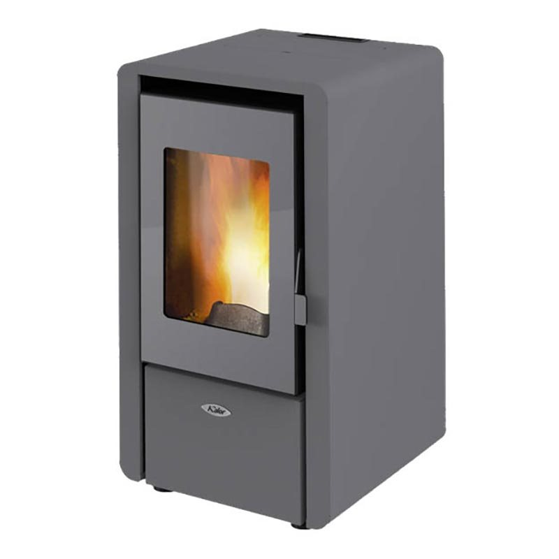
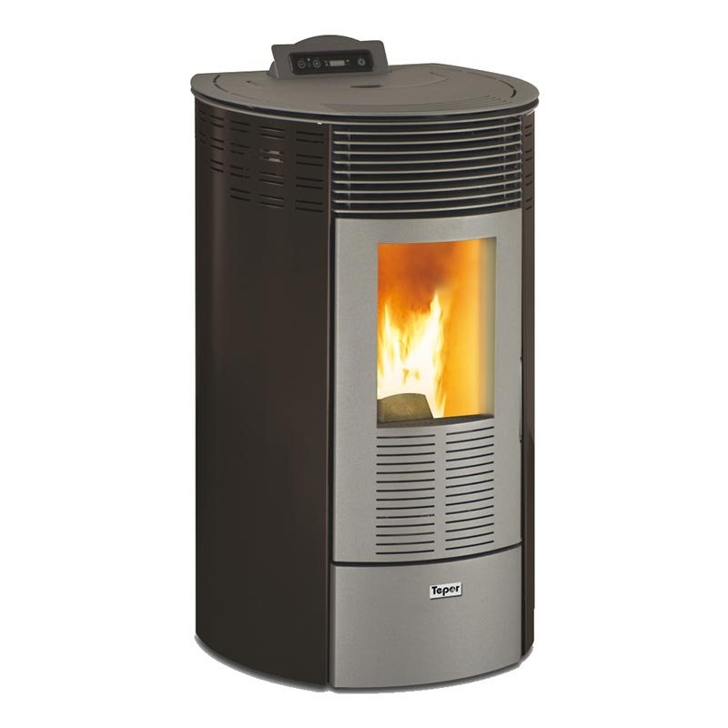
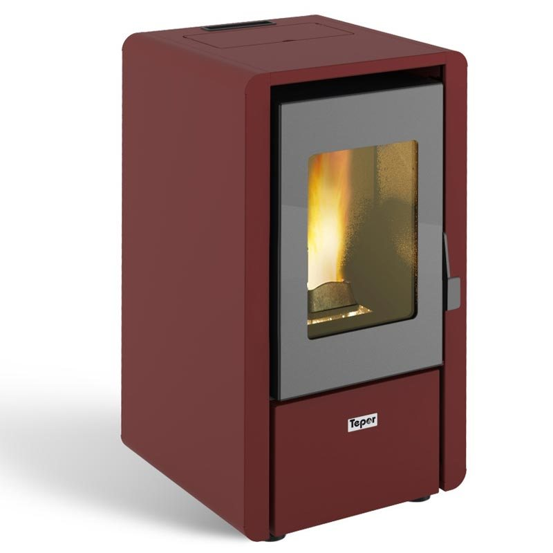

Petite Tepor - siva

- Globalna toplinska snaga 2,70 - 6,15 kW
- Volumen ambijenta do 145 m3
- Korisnost 90,00 - 93,34%
- Potrošnja goriva 0,57 - 1,34 kg/h
- Dimenzije Š 426 × D 487×V 770 mm
Cijena na upit
Peći visoke učinkovitosti do 92,7% za veliku uštedu goriva. Čist i funkcionalan dizajn se uklapa u svaki ambijent.

Cijena na upit

Cijena na upit

Cijena na upit
Prodaja, stručna podrška, servis i ovjera vaga na jednom mjestu.